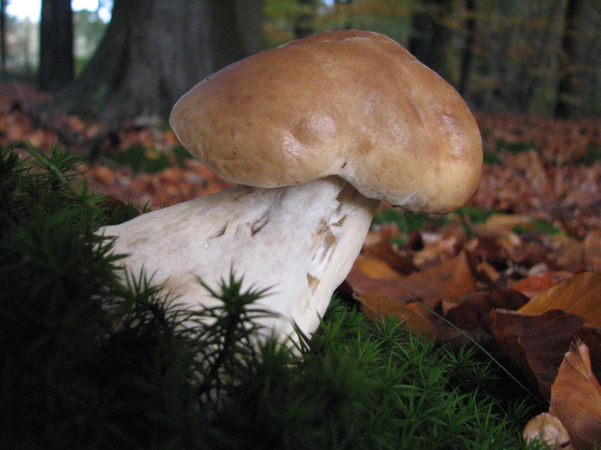
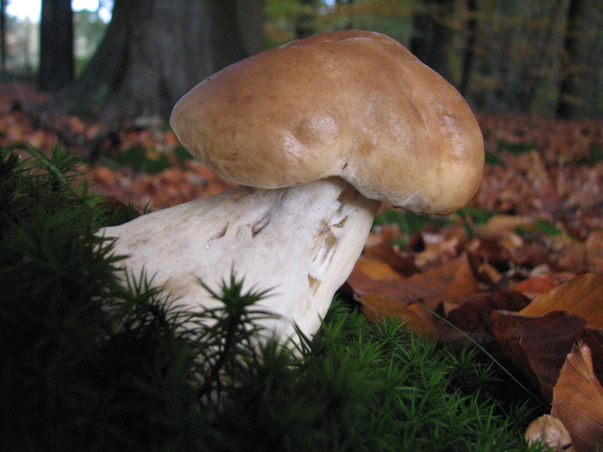

| Cecha | Opis |
|---|---|
| Kapelusz | 6 - 20cm, młody białawy, później jasnobrązowy do ciemnobrązowego bez czerwonego odcienia, najpierw półkulisty, potem wypukły, stary poduszkowato rozpostarty; powierzchnia gładka, również pomarszczona, wilgotna lepka. |
| Rurki | Drobne, okrągławe na przekroju rurki o długości od 8 do 30 milimetrów. Dają się łatwo oddzielić od miąższu kapelusza. Pory i rurki u młodych owocników są zwykle barwy białej bądź kremowej. U osobników starszych są one żółtawooliwkowe, żółtozielone i oliwkowozielone. U nasady hymenofor jest zatokowo wycięty. |
| Trzon | Biały do jasnobrązowego, w górnej części z wyraźną białą, drobnooczkową siatką, młody przeważnie pękaty, potem maczugowaty, stary raczej cylindryczny. |
| Miąższ | Młody biały i zwarty, potem gąbczasty, pod skórką brązowawy. Zapach przyjemny, smak orzechowy. |
| Zarodniki | 14 - 17 x 4.5 - 5.5µm, gładkie. Wysyp oliwkowobrązowy. |

Najczęściej pojawiają się od maja do listopada.

Lasy iglaste i liściaste, w miejscach prześwietlonych i na skrajach lasu. Najczęściej jednak łączy się ze świerkami, dlatego najliczniej występuje w górskich lasach świerkowych. Preferuje lasy o średnim wieku drzew.

Jest bardzo podobny do borowika szlachetnego. Różnicą między nimi jest przede wszystkim kolor kapelusza – u borowika ciemnobrązowego jest on zdecydowanie ciemniejszy niż u borowika szlachetnego.

W przeciwieństwie do borowika szlachetnego charakteryzuje się często popękaną powierzchnią kapelusza oraz ciemniejszym trzonem z bardziej wyraźnym wzorem siateczki.

Różni się od Borowika szlachetnego kapeluszem, jak i trzonem o ciemnobrązowej barwie. Co więcej, różnią się one miejscem występowania - borowika szlachetnego najczęściej znaleźć można pod świerkami, borowika sosnowego pod sosnami.
Niejadalny goryczak żółciowy ma gorzki smak i może powodować dolegliwości żołądkowe. Młody goryczak przypomina borowika, ale jego rurki przybierają różowy lub czerwony odcień, a po dotknięciu brązowieją. Trzon goryczaka jest jasnożółty z wyraźną, wypukłą siateczką, co odróżnia go od borowika.